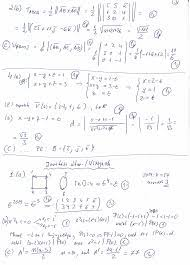

Diszkrét matematika
Ez a kurzus a diszkrét matematika tematikáját tartalmazza.
Temantika
- Halmazok, relációk és függvények, elemi kombinatorika.
- A komplex számok bevezetése, műveletek, gyökvonás, egység gyökök.
- Az algebra alaptétele.
- Számtestek, résztest, test-bővítés.
- Polinomok, maradékos osztás, lnko, Euklidészi algoritmus.
- Algebrai struktúra, félcsoport, csoport, részcsoport.
- Permutációk és permutáció csoportok.